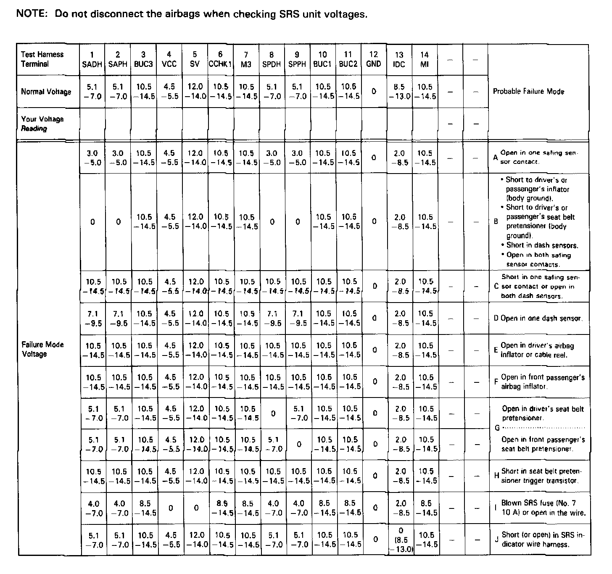
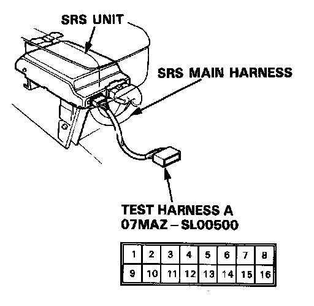
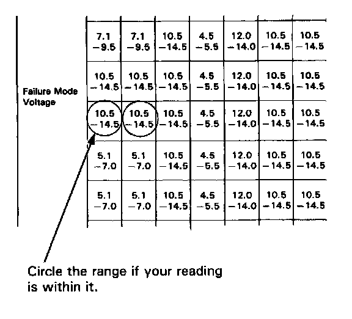
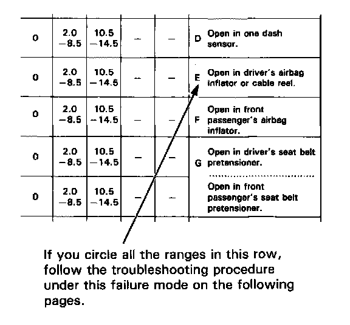
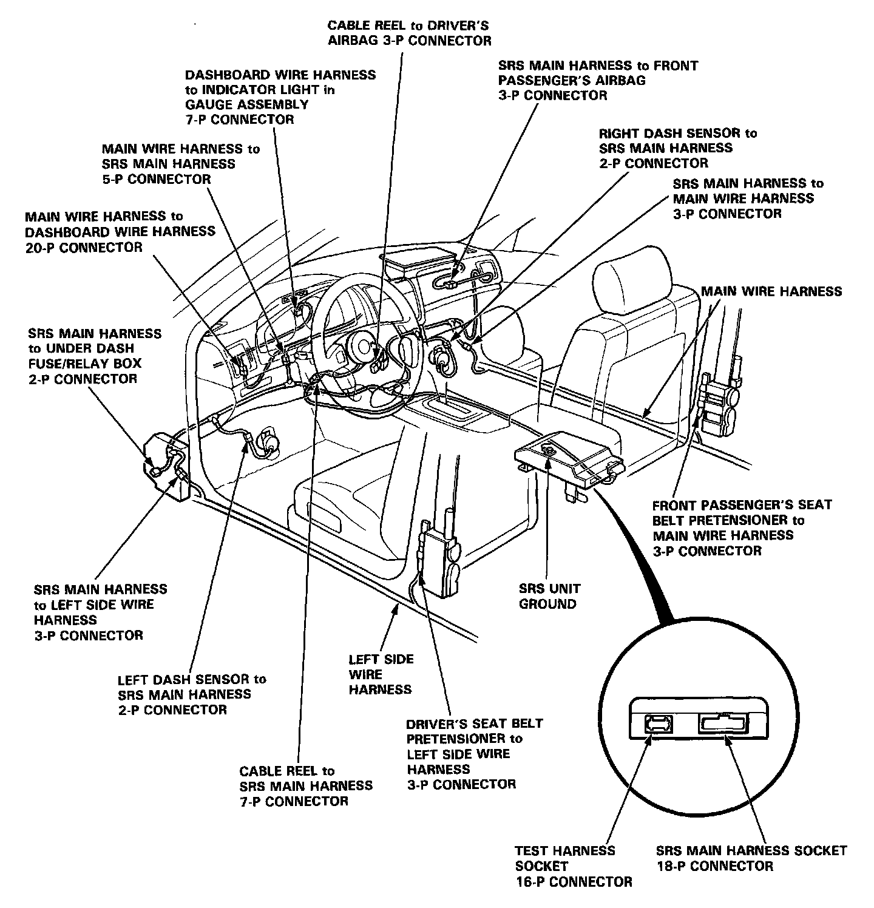

Indicator Stays on Continuously
SRS Indicator Light Stays On Continuously
NOTE: Before troubleshooting, make sure that battery voltage is 12 V or more. Otherwise you'll obtain wrong test readings.

1. Make a photocopy of the chart above.
2. Connect Test Harness A to the SRS unit as shown.

3. Turn the ignition switch ON.
- Voltages in the chart assume the car's "battery voltage" is about 12 volts. Less than 12 volts will result in different or possibly false readings.
- Do not disconnect the airbags from the circuit when checking SRS unit voltages.
4. First, check for voltage between Test Harness Terminal No.1 2 and ground.
- If voltage is indicated, there is a poor ground - refer to "Poor Ground at SRS Unit" procedure.
- If no voltage is indicated, continue with checking all the other terminals.
5. Record your voltage readings, for each terminal, in the row of blank boxes near the top of the chart.
6. Compare each reading with the voltage ranges listed in the column below it. If the reading is within a range, circle that range.

- If you circled all the Failure Mode ranges across any row, check the car for the Probable Failure Mode listed at the end of the row. (Refer to the letter listed to find that procedure).

- If you did not circle all the ranges across any row, replace the SRS unit with a known-good unit, and retest.
- If all your voltage readings are now Normal, replace the original SRS unit.
- If your voltage readings are still not Normal but they don't match a complete row of Failure Mode ranges, check the condition of the SRS connectors shown in the diagram below.

Wiring Locations